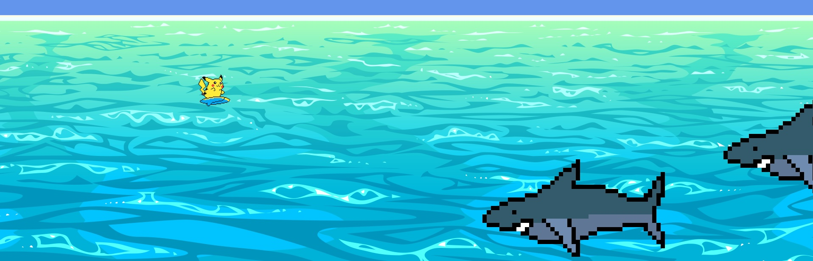
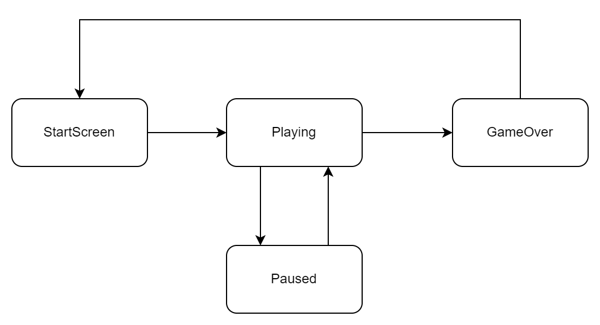

MonoGame - Een eerste game met een game loop
In de MAUI-lessen reageerden we op events en lieten we acties uitvoeren via commands. In een game blijft de wereld ook veranderen wanneer de gebruiker niets doet: water beweegt, vijanden verschijnen en animaties lopen verder. We maken kennis met een andere manier om onze code te organiseren: de game loop.
We bouwen doorheen vier lessen hetzelfde spel en verbeteren het ontwerp stapsgewijs. Vandaag leren we MonoGame kennen en maken we een eerste werkende versie met een enum en if/else.
Bij elke uitbreiding vertrekken we van wat de speler moet kunnen zien of doen. Daaruit leiden we af welke gegevens we moeten bewaren, welke berekening nodig is en waar die verantwoordelijkheid thuishoort. Zo passen we de ontwerpvragen uit de OO- en MAUI-lessen toe op een nieuw soort toepassing.
De afbeeldingen en het fontbestand vind je in dezelfde GitHub-repository als bij de voorgaande lessen, in de map MonoGame/Assets. Download de bestanden vóór je aan de contentstap begint. Maak voor deze les een nieuw MonoGame-project.
|
Het doel van de lessenreeks
We bouwen een klein 2D-spel waarin Pikachu over de oceaan surft en haaien moet ontwijken.

Dit is het beoogde eindresultaat na de vier MonoGame-lessen:
-
Het spel begint met een startscherm.
-
De speler beweegt in vier richtingen met het toetsenbord.
-
Iedere drie seconden verschijnt een haai op een willekeurige hoogte. Haaien zwemmen van rechts naar links.
-
De speler begint met drie levens. Een botsing kost een leven; bij nul levens is het spel voorbij.
-
Het resterende aantal levens is zichtbaar.
-
Met
Pkan de speler pauzeren; metEnterverder spelen. -
Na game over verschijnt een eindscherm en kan de speler met
Sterugkeren naar het startscherm.
Het eindpunt van deze les
Vandaag bouwen we de basis waarmee we in de volgende lessen verder kunnen:
-
een venster van 768 bij 540 pixels;
-
een startmenu dat met
Enternaar het spel gaat; -
Pikachu die beweegt met de pijltjestoetsen of
ZQSD; -
een achtergrond die naar links verschuift;
-
haaien die om de drie seconden op dezelfde hoogte verschijnen en naar links bewegen;
-
pauzeren met
Pen dezelfde spelwereld hervatten metEnter; -
afsluiten met
Escape.
Botsingen, levens en een werkend game-oververloop komen later. Ook het opsplitsen van toestanden in afzonderlijke klassen bewaren we voor de volgende les. Aan het einde van vandaag moet je kunnen uitleggen hoe de game loop, de invoer, de spelgegevens en het tekenen samenwerken.
State In Business Software
Het State Pattern kan toegepast worden wanneer bepaalde domeinlogica sterk onderhevig is aan de notie van toestand, of State. We bedoelen daarmee niet de algemene toestand van het geheugen van de computer, maar wel het onderscheiden van discrete toestanden in de logica.
| De gedetailleerde blauwdruk voor het State Pattern kan je bekijken op Refactoring Guru. |
Zo kent een document op een wiki bijvoorbeeld verschillende toestanden.
-
Draft
-
Review
-
Published
-
Rejected
-
Archived
-
Etc
Het gedrag van de applicatie zal verschillen naargelang de State van het document dat behandeld wordt door de logica.
Dit kan je implementeren op enkele low-tech manieren
-
booleans en ifs
-
strings en switches
-
…
Code met veel states en state-afhankelijke logica kan moeilijk leesbaar en onderhoudbaar worden.
Het State Pattern lost dit op door States expliciet te introduceren als klasses. State-eigen logica wordt hierin vervat. States erven van een gemeenschappelijke abstracte basisklasse. Het object onderhevig aan State krijgt een state implementatie toegewezen en delegeert vervolgens de state-afhankelijke methodeaanroepen naar het State object. States krijgen het recht om de huidige State op het state-afhankelijke object te veranderen.
State In Videogames
Videogames zijn een sprekend voorbeeld van logica die onderhevig is aan state.
Een klassieke videogame kent enkele duidelijk te onderscheiden states waarin de uit te voeren logica sterk verschilt.
-
StartScreen
-
Playing
-
Paused
-
Game Over
We kunnen deze states én de toegelaten overgangen in kaart brengen.

Wat is MonoGame?
MonoGame is een framework om games in C# te bouwen. Het voorziet onder meer een venster, een game loop, toegang tot toetsenbord en gamepad, het laden van afbeeldingen en fonts, en het tekenen op het scherm.
We hoeven het venster, de toegang tot de grafische kaart en het uitlezen van het toetsenbord niet zelf te bouwen. Daarvoor gebruiken we de bouwstenen van het framework. De spelregels, zoals wanneer een haai verschijnt en wat pauzeren betekent, bepalen we zelf. Bij het uitwerken daarvan komen we deze types tegen:
Game-
De basisklasse die de levenscyclus en game loop aanbiedt.
GraphicsDeviceManager-
Configureert het grafische venster, bijvoorbeeld de afmetingen.
Texture2D-
Een geladen afbeelding die we kunnen tekenen.
Vector2-
Een waarde met twee componenten,
XenY, bijvoorbeeld voor een positie. SpriteBatch-
Verzamelt tekenopdrachten voor afbeeldingen en tekst.
SpriteFont-
Een font waarmee we tekst tekenen.
GameTime-
Informatie over de verstreken speltijd.
MonoGame is geen visuele game engine waarin we een scène samenklikken. We schrijven zelf in C# hoe het spel werkt. Dat maakt het geschikt om verantwoordelijkheden, objecttoestand en ontwerpkeuzes te onderzoeken.
MonoGame installeren voor Visual Studio
We gebruiken Visual Studio op Windows, zoals bij MAUI. We hebben een project nodig dat een gamevenster kan openen, de MonoGame-bibliotheken gebruikt en afbeeldingen kan verwerken. Een projecttemplate zet die samenhangende onderdelen voor ons klaar. Voor ons desktopspel kiezen we de DesktopGL-template; de MGCB Editor gebruiken we om de content te beheren.
De Extension Manager leren kennen
Een extensie voegt mogelijkheden toe aan Visual Studio, bijvoorbeeld projecttemplates of ondersteuning voor een extra editor. Via de Extension Manager kan je extensies zoeken, installeren en beheren.
We gebruiken de MonoGame Framework C# project templates-extensie van MonoGame. Die voegt de projecttemplates toe en laat ons de MGCB Editor vanuit Visual Studio openen.
-
Start Visual Studio. Kies op het startscherm eventueel Continue without code.
-
Open Extensions > Manage Extensions. Dit is de Extension Manager.
-
Zoek in het online aanbod (Browse of Online, afhankelijk van je Visual Studio-versie) op
MonoGame. -
Selecteer MonoGame Framework C# project templates van MonoGame. Bekijk de beschrijving en kies Install of Download.
-
Wacht tot de download klaar is. Als Visual Studio meldt dat de installatie gepland is, sluit je alle Visual Studio-vensters.
-
Rond de installatie af in de VSIX Installer. Kies Modify wanneer daarom gevraagd wordt en wacht tot de installatie voltooid is.
-
Start Visual Studio opnieuw. Open opnieuw Extensions > Manage Extensions en controleer bij Installed of de MonoGame-extensie geïnstalleerd en ingeschakeld is.
| Downloaden en installeren zijn hier niet altijd dezelfde stap. Een geplande installatie wordt pas uitgevoerd nadat Visual Studio gesloten is. Via Installed kan je later terugvinden welke extensies aanwezig zijn; via Updates kan je beschikbare updates bekijken. |
Een MonoGame-project aanmaken
-
Kies File > New > Project of Create a new project op het startscherm en zoek op
MonoGame. -
Kies MonoGame Cross-Platform Desktop Application, de DesktopGL-template.
-
Geef het project de naam
MonoGame_Pikachu. -
Kies een locatie, klik op Create en wacht tot Visual Studio het project heeft aangemaakt.
De extensie breidt Visual Studio uit. De template maakt een project aan met de benodigde NuGet-packages en contentconfiguratie. Die instellingen nemen we over van de template.
Verschijnt de template niet? Controleer bij Extensions > Manage Extensions > Installed of de extensie actief is en of de VSIX-installatie volledig is afgerond. Herstart Visual Studio en wis eventuele taal- of platformfilters in Create a new project voordat je opnieuw op MonoGame zoekt.
|
Een eerste controle
Kies Build > Build Solution. Visual Studio herstelt de benodigde packages en de MonoGame-buildstappen herstellen de lokale contenttools. Bekijk bij problemen View > Output met Build als uitvoerbron en de Error List.
Start het project daarna zonder code te wijzigen met F5. Je hoort een blauw venster te zien. Sluit het opnieuw met Escape.
| Ga pas verder wanneer dit werkt. Door na iedere kleine stap opnieuw te bouwen en te starten, kan je een fout koppelen aan de laatste wijziging. |
Van events en commands naar een game loop
Bij MAUI schreven we bijvoorbeeld een event handler voor Clicked, of een command in het viewmodel dat via een knop wordt uitgevoerd. Onze actie wordt aangeroepen wanneer die interactie plaatsvindt.
Stel dat een command de X-positie van de speler één keer verhoogt. Dat levert één verplaatsing op. Voor een beweging die blijft doorgaan, moet die berekening herhaald worden. Bovendien moeten de haaien blijven zwemmen terwijl de speler het toetsenbord loslaat. Een berekening die we uitsluitend bij een gebruikersactie uitvoeren, beschrijft dat gedrag dus nog niet.
We hebben een ritme nodig waarop we de wereld telkens een kleine stap laten evolueren. In MonoGame verzorgt de game loop dat ritme: het framework roept Update en Draw voortdurend opnieuw aan. Wij bepalen wat er tijdens zo’n stap verandert en hoe de resulterende toestand eruitziet.
| Vraag | MAUI in de vorige lessen | MonoGame in deze les |
|---|---|---|
Wanneer draait onze actielogica? |
Een event of een aanroep van een command voert een actie uit. |
|
Hoe verwerken we invoer? |
Een control meldt een interactie; een handler of command reageert. |
We vragen in |
Hoe verandert de weergave? |
We wijzigen controls of properties waarop de UI gebonden is. |
|
Wat gebeurt er zonder gebruikersactie? |
Onze knopactie wordt niet opnieuw uitgevoerd. |
De achtergrond, vijanden en timers kunnen blijven veranderen. |
| MAUI verwerkt intern ook berichten, events en bijvoorbeeld animaties. Het verschil gaat hier over hoe wij onze applicatielogica schrijven. Een command is een aanroepbare actie, geen lus die vanzelf blijft draaien. Ook in een game kunnen events bestaan; in deze les lezen we het toetsenbord telkens opnieuw uit. Dat heet polling. |
Conceptueel gebeurt na het opstarten het volgende:
Zolang het spel actief is:
Update: lees invoer, wijzig posities en werk timers bij
Draw: teken de huidige toestand
HerhaalDit schema is uitleg, geen lus die je zelf moet toevoegen. Game.Run() laat MonoGame de timing en de herhaling regelen.
De standaard game loop gebruikt een vaste tijdstap en streeft naar 60 updates per seconde. Update en Draw worden niet gegarandeerd even vaak uitgevoerd: bij vertraging kan MonoGame meerdere updates uitvoeren en een tekenbeurt overslaan. Zie ook de uitleg over de game loop en vaste en variabele tijdstappen.
Daarom spreken we in onze code over pixels per update wanneer we bij iedere Update een vaste afstand verplaatsen. Bij 60 updates per seconde betekent 5 pixels per update ongeveer 300 pixels per seconde. Dat is niet hetzelfde als zeggen dat ieder getekend frame een vaste verplaatsing veroorzaakt.
Zet geen eigen oneindige lus, Console.ReadLine() of Thread.Sleep() in Update. Een update voert een kleine stap uit en geeft de controle terug aan MonoGame. Blokkeren verhindert dat het framework tijdig verder kan tekenen en invoer verwerken. Ook drie seconden wachten op een nieuwe haai doen we later met een timerwaarde, zonder de lus stil te zetten.
|
Het project en de levenscyclus
Nu de game loop de uitvoering regelt, moeten we weten waar onze eigen code daarin past. Open Solution Explorer en volg het opstarten van de toepassing vanaf Program.cs:
Program.cs-
Maakt een
Game1-object en roeptRun()aan. Game1.cs-
Bevat onze gameklasse. We erven van
Gameen overschrijven de methoden die MonoGame aanroept. Content/Content.mgcb-
Beschrijft welke afbeeldingen en fonts de contenttools moeten verwerken.
MonoGame_Pikachu.csproj-
Bevat onder meer het target framework en de NuGet-packages.
De startcode in Program.cs is kort:
using var game = new MonoGame_Pikachu.Game1();
game.Run();De constructor maakt en configureert het object. Daarna regelt Run() het opstarten en de game loop. using zorgt dat de game haar resources opruimt wanneer ze wordt afgesloten.
| Plaats | Verantwoordelijkheid |
|---|---|
Constructor |
Vensterinstellingen en de contentmap configureren. |
|
De beginwaarden van onze spelgegevens instellen. |
|
Resources laden die nodig zijn om te tekenen. |
|
Invoer verwerken en spelgegevens veranderen, telkens één stap. |
|
De huidige spelgegevens weergeven, zonder de spelregels uit te voeren. |
In deze toepassing gebeuren de initialisatie en het laden bij de start. Update en Draw worden daarna herhaald. Behoud de base.Initialize()-aanroep: de basisklasse verzorgt verdere initialisatie, waaronder het aanroepen van LoadContent. Roep die levenscyclusmethoden niet zelf op om bijvoorbeeld uit pauze te komen.
Stap 1 - Een venster met een duidelijk startpunt
Onze eerste vraag is klein: kunnen we een speelveld tonen en het programma weer sluiten? We kiezen een venster van 768 bij 540 pixels zodat iedereen hetzelfde zichtbare speelveld heeft. Dat zijn instellingen voor het opstarten; we hoeven ze niet tijdens iedere update opnieuw toe te kennen.
De verantwoordelijkheden vallen al uiteen. De constructor configureert het venster. Update controleert of de speler wil afsluiten. Draw maakt het beeld klaar voor een nieuwe tekenbeurt. Zodra we afbeeldingen hebben, zal Draw een SpriteBatch nodig hebben. Die maken we aan in LoadContent, waar de grafische voorzieningen beschikbaar zijn, en bewaren we voor de volgende tekenbeurten.
Dit levert onderstaande basis voor Game1.cs op. Vervang de templatecode door deze versie en zoek de drie verantwoordelijkheden erin terug. Bij latere codeblokken vermelden we telkens of je een methode aanvult of vervangt.
using Microsoft.Xna.Framework;
using Microsoft.Xna.Framework.Graphics;
using Microsoft.Xna.Framework.Input;
namespace MonoGame_Pikachu;
public class Game1 : Game
{
private readonly GraphicsDeviceManager _graphics;
private SpriteBatch _spriteBatch;
public Game1()
{
_graphics = new GraphicsDeviceManager(this);
Content.RootDirectory = "Content";
IsMouseVisible = true;
_graphics.PreferredBackBufferWidth = 768;
_graphics.PreferredBackBufferHeight = 540;
}
protected override void Initialize()
{
base.Initialize();
}
protected override void LoadContent()
{
_spriteBatch = new SpriteBatch(GraphicsDevice);
}
protected override void Update(GameTime gameTime)
{
if (Keyboard.GetState().IsKeyDown(Keys.Escape))
Exit();
base.Update(gameTime);
}
protected override void Draw(GameTime gameTime)
{
GraphicsDevice.Clear(Color.CornflowerBlue);
_spriteBatch.Begin();
_spriteBatch.End();
base.Draw(gameTime);
}
}Game1 : Game is overerving. Met override leveren we een eigen implementatie van een methode uit de basisklasse. MonoGame roept die implementatie aan: we gebruiken dus al polymorfisme, ook al schrijven we vandaag nog geen eigen stateklassen.
GraphicsDevice.Clear geeft de nieuwe tekenbeurt een egale achtergrond. We zullen straks de volledige zichtbare wereld opnieuw tekenen; we hoeven dus niet zelf bij te houden welke pixels van de vorige spelerpositie gewist moeten worden. Tussen Begin en End komen die tekenopdrachten.
Het veld _spriteBatch verbindt twee momenten in de levenscyclus: aanmaken bij het laden en gebruiken tijdens het tekenen. Dat is dezelfde reden waarom we in een MAUI-pagina een verwijzing naar haar service bewaren. Een lokale variabele in LoadContent zou voor Draw niet rechtstreeks beschikbaar zijn.
Controleer: start het spel en wijzig daarna de achtergrondkleur. Zie je het verschil? Plaats kort een breakpoint in Update, hervat met F5 en merk dat dezelfde methode opnieuw wordt bereikt zonder een toets in het spel te gebruiken. Verwijder het breakpoint daarna.
Stap 2 - Een speler zichtbaar maken
Het venster werkt, maar de speler ziet nog geen personage. Om Pikachu te tonen hebben we twee soorten informatie nodig: hoe ziet hij eruit en waar tekenen we hem? De afbeelding kan dezelfde blijven terwijl de positie later verandert. We zullen die twee gegevens daarom afzonderlijk bewaren.
Eerst maken we de afbeelding beschikbaar voor het spel. Een PNG in een map is een bronbestand. Voor het tekenen gebruiken we een geladen Texture2D. De Content Pipeline verbindt die twee: ze verwerkt de bronbestanden tijdens het bouwen naar .xnb-bestanden, die onze game tijdens het uitvoeren kan laden. Daardoor staan het verwerken van de assets en het tekenen van de spelwereld los van elkaar.
De assets ophalen
Haal uit MonoGame/Assets in de repository deze vier bestanden:
-
surfing-pikachu.png; -
haai.png; -
water.png; -
game-font.spritefont.
Je kan de repository downloaden via Code > Download ZIP en daarna uitpakken. Download je een afbeelding afzonderlijk, gebruik dan de downloadknop voor het oorspronkelijke bestand. Een opgeslagen GitHub-webpagina is geen PNG-afbeelding.
De MGCB Editor openen
De editor om content te beheren is een lokale tool bij het project. De eerder geïnstalleerde MonoGame-extensie koppelt die editor aan Visual Studio.
-
Bouw het project eerst via Build > Build Solution, zodat de benodigde packages en contenttools beschikbaar zijn.
-
Open Solution Explorer en klap de map Content open.
-
Dubbelklik op
Content.mgcb. De MGCB Editor opent in een apart venster.
| Opent de editor niet? Controleer in de Extension Manager of de MonoGame-extensie ingeschakeld is en herstart Visual Studio na een installatie of wijziging. Controleer ook of het bouwen geslaagd is via View > Output > Build. De MonoGame-documentatie over de MGCB Editor beschrijft deze integratie. |
Afbeeldingen en het font registreren
-
Kies in de MGCB Editor Add > Existing Item en voeg de drie PNG-bestanden en het meegeleverde
game-font.spritefonttoe. -
Kies Copy wanneer de editor vraagt hoe bestanden buiten de contentmap moeten worden toegevoegd. Zo komen de bestanden in de eigen
Content-map terecht. -
Sla
Content.mgcbop en bouw de content via Build in de editor. Controleer of er fouten gemeld worden.
Het meegeleverde fontbestand beschrijft het lettertype en de tekstgrootte. De Content Pipeline verwerkt het zodat we het later met Content.Load<SpriteFont>("game-font") kunnen laden. Ook hier gebruiken we de assetnaam zonder bestandsextensie.
In Content staan nu de drie afbeeldingen, game-font.spritefont en Content.mgcb. Alleen bestanden naar die map kopiëren is niet voldoende: ze moeten ook in Content.mgcb geregistreerd zijn.
Welke gegevens moet de game onthouden?
Voor het uiterlijk bewaren we een Texture2D. Voor de plaats gebruiken we een Vector2: X en Y vormen samen één positie. Dat sluit aan bij de Coordinate uit de OO-herhaling. MonoGame biedt hier zelf al een bruikbaar type aan.
De positie moet haar waarde behouden tussen opeenvolgende updates. Een variabele die we telkens opnieuw aanmaken met de beginpositie zou de vorige beweging vergeten. Bovendien moet Draw de positie kunnen lezen die Update heeft berekend. Daarom worden de texture en de positie velden van de game. We houden ze private zodat de game zelf bepaalt wanneer ze wijzigen.
Voeg de twee velden bij de bestaande velden in Game1:
private Texture2D _pikachuTexture;
private Vector2 _pikachuPosition;Daarna kiezen we het juiste moment om die velden een waarde te geven. De beginpositie hoort bij de initialisatie van de spelgegevens. Het laden van de afbeelding hoort bij LoadContent. Zo vraagt een gewone tekenbeurt alleen om de al geladen texture en de actuele positie.
Vervang Initialize en LoadContent door de volgende implementaties:
protected override void Initialize()
{
_pikachuPosition = new Vector2(0, _graphics.PreferredBackBufferHeight / 2);
base.Initialize();
}protected override void LoadContent()
{
_spriteBatch = new SpriteBatch(GraphicsDevice);
_pikachuTexture = Content.Load<Texture2D>("surfing-pikachu");
}Content.Load<Texture2D> geeft het gewenste type aan. De naam is relatief ten opzichte van Content.RootDirectory, zonder bestandsextensie. We schrijven dus "surfing-pikachu", niet "Content/surfing-pikachu.png".
We beschikken nu over een afbeelding en een positie, maar die gegevens worden nog nergens weergegeven. Draw krijgt daarom de verantwoordelijkheid ze samen te gebruiken. De eenvoudige overload van SpriteBatch.Draw vraagt precies de afbeelding, de positie en een kleurfilter. Voeg de aanroep tussen Begin en End toe:
_spriteBatch.Draw(_pikachuTexture, _pikachuPosition, Color.White);Deze eenvoudige overload heeft drie argumenten: de afbeelding, de positie en een kleurfilter. We tekenen de volledige afbeelding op haar oorspronkelijke grootte. Color.White behoudt de oorspronkelijke kleuren; deze parameter maakt de afbeelding niet volledig wit.
Het punt (0, 0) ligt linksboven in het venster. X groeit naar rechts en Y groeit naar beneden. De linkerbovenhoek van de afbeelding ligt op de opgegeven positie. De beginwaarde voor Y plaatst dus de bovenkant van Pikachu halverwege het venster.
Onderzoek: Pikachu verschijnt links, met zijn bovenkant halverwege het venster. Verhoog alleen X en voorspel waar hij terechtkomt; doe daarna hetzelfde met Y. Leg uit waarom de texture bij deze wijziging dezelfde kan blijven. Herstel vervolgens de beginpositie.
Stap 3 - De tekenaanroep aanpassen aan ons spel
Pikachu staat op het scherm. Nu willen we zijn getekende grootte kunnen kiezen, zodat er ook plaats is voor de andere spelonderdelen. We kunnen daarvoor de bronafbeelding bewerken, maar een schaal bij het tekenen laat ons dezelfde asset op verschillende groottes gebruiken. De eenvoudige Draw-overload uit de vorige stap blijft bruikbaar wanneer de oorspronkelijke grootte volstaat.
Voor schalen biedt MonoGame een uitgebreidere overload aan. Die vraagt ook instellingen voor onder meer rotatie en spiegeling. Onze game gebruikt voorlopig steeds dezelfde keuzes: de volledige afbeelding, de oorspronkelijke kleuren, geen rotatie en geen spiegeling. Alleen texture, positie en schaal verschillen per tekenaanroep.
Daaruit volgt een kleine ontwerpkeuze: we bundelen de gedeelde tekeninstellingen op één plaats. Dat kan met een gewone hulpmethode. We kiezen hier voor extension methods, zodat de aanroep aansluit bij de bestaande spriteBatch.Draw(…)-schrijfwijze. Ze kennen alleen de tekengegevens; invoer, posities bijwerken en speltoestanden horen er niet bij.
De eerste methode vult alleen Color.White in. De tweede geeft ook een schaal door. Maak hiervoor Extensions/SpriteBatchExtensions.cs:
using Microsoft.Xna.Framework;
using Microsoft.Xna.Framework.Graphics;
namespace MonoGame_Pikachu.Extensions;
internal static class SpriteBatchExtensions
{
public static void Draw(
this SpriteBatch spriteBatch,
Texture2D texture,
Vector2 position)
{
spriteBatch.Draw(texture, position, Color.White);
}
public static void Draw(
this SpriteBatch spriteBatch,
Texture2D texture,
Vector2 position,
float scale)
{
spriteBatch.Draw(texture, position, null, Color.White,
0f, Vector2.Zero, scale, SpriteEffects.None, 0f);
}
}Een extension method is een statische methode die we met de schrijfwijze van een instantiemethode kunnen aanroepen. this SpriteBatch spriteBatch geeft aan op welk type ze toepasbaar is. We wijzigen de klasse SpriteBatch zelf niet en erven er ook niet van.
Voeg bovenaan Game1.cs de namespace toe:
using MonoGame_Pikachu.Extensions;Met de eerste extension method kunnen we de kleur weglaten:
_spriteBatch.Draw(_pikachuTexture, _pikachuPosition);Deze aanroep geeft hetzelfde beeld als de eenvoudige overload met Color.White.
De schaal voor Pikachu is een keuze van onze game, geen algemene eigenschap van de tekenhulp. Daarom bewaren we die in Game1 en geven we ze mee aan de extension method. We kiezen 0.5f: zowel breedte als hoogte worden gehalveerd. Een benoemde constante maakt die keuze herkenbaar en houdt haar op één plaats.
Voeg deze constante toe binnen Game1:
private const float PLAYER_SCALE = 0.5f;Vervang de tekenaanroep vervolgens door:
_spriteBatch.Draw(_pikachuTexture, _pikachuPosition, PLAYER_SCALE);De methode met een float als derde argument komt uit onze extensieklasse. Verwar ze niet met de ingebouwde overload die als derde argument een Color verwacht. Binnen de extension method gebruiken we een uitgebreidere overload om de schaal door te geven; de overige tekeninstellingen staan zo op één plaats.
Onderzoek: Pikachu heeft dezelfde positie, maar wordt nu half zo breed en half zo hoog getekend. Probeer tijdelijk schaal 1f en herstel daarna 0.5f. Waarom geven we de schaal mee als argument, terwijl de extension method zelf Color.White invult? Welke keuze geldt voor één figuur en welke keuze delen onze tekenaanroepen?
Stap 4 - Bewegen door invoer te blijven controleren
Tot nu toe verandert de spelerpositie alleen wanneer wij de beginwaarde in de code aanpassen. We willen nu dat de speler naar rechts blijft bewegen zolang de rechterpijl ingedrukt is, en stopt zodra hij die loslaat.
Wat moet er tijdens één update gebeuren? We lezen de huidige invoer. Is de rechterpijl ingedrukt, dan verhogen we X met een kleine afstand. In de volgende update vertrekken we van die nieuwe positie. Bij een afstand van 5 wordt X bijvoorbeeld achtereenvolgens 100, 105, 110 en 115. Wanneer de toets wordt losgelaten, blijft X op de laatst berekende waarde staan.
Die afstand per update bepaalt de snelheid. We geven haar een naam zodat alle richtingen dezelfde instelling gebruiken. Voeg de constante toe binnen Game1:
private const int PLAYER_SPEED = 5;Nu bepalen we welke methode deze verantwoordelijkheid krijgt. Initialize wordt gebruikt om te starten; beweging moet zich herhalen. Draw moet de actuele positie weergeven. De berekening hoort dus in Update. We bundelen het deel dat over de speler gaat in UpdatePlayerPosition, zodat de game loop straks ook andere taken kan coördineren.
De besturing laat twee toetsen per richting toe. De voorwaarde voor rechts wordt dus: rechterpijl of D is ingedrukt. Een hulpmethode IsKeyDown verwoordt die vraag en voorkomt dat we de toetsenbordaanroep overal uitschrijven. Het blijft polling: bij iedere aanroep vragen we naar de toestand van de toets op dat moment.
Redeneer vóór je verder leest: welke component moet wijzigen voor links, omhoog en omlaag? Moet die component groter of kleiner worden? Wat verwacht je wanneer rechts en omhoog tegelijk ingedrukt zijn?
De uitwerking bestaat uit deze private methoden in Game1:
private void UpdatePlayerPosition()
{
if (IsKeyDown(Keys.Right, Keys.D))
_pikachuPosition.X += PLAYER_SPEED;
if (IsKeyDown(Keys.Left, Keys.Q))
_pikachuPosition.X -= PLAYER_SPEED;
if (IsKeyDown(Keys.Up, Keys.Z))
_pikachuPosition.Y -= PLAYER_SPEED;
if (IsKeyDown(Keys.Down, Keys.S))
_pikachuPosition.Y += PLAYER_SPEED;
}
private bool IsKeyDown(Keys key)
=> Keyboard.GetState().IsKeyDown(key);
private bool IsKeyDown(Keys firstKey, Keys secondKey)
=> IsKeyDown(firstKey) || IsKeyDown(secondKey);De overload met twee toetsen hergebruikt de overload met één toets. Zo ondersteunen we zowel pijltjestoetsen als ZQSD. Voor een QWERTY-indeling kan je zelf de alternatieven aanpassen naar WASD.
Een methode definiëren voert haar nog niet uit. De game loop moet onze spelerberekening bij iedere update bereiken. Voeg daarom in Update, na de controle op Escape en vóór base.Update(gameTime), deze aanroep toe:
UpdatePlayerPosition();IsKeyDown betekent is deze toets nu ingedrukt?, niet werd deze toets zojuist ingedrukt?. Bij ingedrukt houden is de voorwaarde gedurende veel updates waar. Iedere update verplaatst Pikachu een klein stukje. Draw leest daarna de positie en tekent hem opnieuw.
We gebruiken vier afzonderlijke if-constructies. Daardoor kan de speler bijvoorbeeld tegelijk naar rechts en omhoog bewegen. Een keten met else if zou maar één van die richtingen per update verwerken. De diagonale beweging is in deze eenvoudige versie sneller; we normaliseren de richting vandaag nog niet.
Beweging staat in Update, niet in Draw. Tekenen hoort de positie alleen te lezen. Zo hangt de spelberekening niet af van het aantal tekenbeurten.
|
Onderzoek: houd een richting ingedrukt en laat daarna los. Test ook twee richtingen tegelijk en vergelijk het resultaat met je voorspelling. Welke verandering zou optreden als je de vier if-constructies door een if/else if-keten vervangt? De speler kan voorlopig buiten beeld bewegen; de schermgrenzen vormen een oefening op het einde.
Stap 5 - Een bewegende achtergrond
De speler kan bewegen, maar het blauwe vlak geeft nog geen indruk van surfen. We willen water zien dat voortdurend naar links schuift. Daarmee krijgen we een tweede soort beweging: ze hangt niet af van toetsenbordinput.
Welke gegevens verschillen van de speler? Het water heeft een eigen afbeelding, positie, schaal en snelheid. Het gebruikt wel dezelfde tekenhulp en hetzelfde coördinatenstelsel. De positie moet zelfstandig blijven bestaan: als we de spelerpositie zouden hergebruiken, zou het water onbedoeld meebewegen met de besturing.
We kiezen een schaal van 0.25f voor de waterafbeelding en een verplaatsing van 2 pixels naar links per update. De constanten beschrijven de instellingen; het positieveld bewaart de veranderende toestand. Voeg deze gegevens toe binnen Game1:
private const int BACKGROUND_SPEED = 2;
private const float BACKGROUND_SCALE = 0.25f;
private Texture2D _backgroundTexture;
private Vector2 _backgroundPosition;Het water begint linksboven. Dat is een beginwaarde, dus die hoort in Initialize vóór base.Initialize():
_backgroundPosition = Vector2.Zero;De afbeelding is nodig bij elke tekenbeurt. We laden haar samen met de andere resources in LoadContent:
_backgroundTexture = Content.Load<Texture2D>("water");Naar links bewegen betekent X verkleinen. De berekening heeft geen toetsvoorwaarde nodig: ook als de speler niets doet, moet ze worden uitgevoerd. Geef haar een eigen methode en roep die in Update aan vóór UpdatePlayerPosition():
private void UpdateBackgroundPosition()
{
_backgroundPosition.X -= BACKGROUND_SPEED;
}We hebben nu twee afbeeldingen die elkaar kunnen overlappen. Welke hoort vooraan? Pikachu moet zichtbaar blijven bovenop het water. Bij onze standaardinstellingen worden latere tekenopdrachten bovenop eerdere getekend. Daarom is de volgorde binnen Begin en End: eerst water, daarna Pikachu.
_spriteBatch.Draw(_backgroundTexture, _backgroundPosition, BACKGROUND_SCALE);
_spriteBatch.Draw(_pikachuTexture, _pikachuPosition, PLAYER_SCALE);Onderzoek: raak geen toetsen aan. Het water blijft bewegen terwijl Pikachu op zijn positie blijft. Wissel tijdelijk de twee tekenaanroepen om en verklaar het verschil dat je ziet. Herstel daarna de volgorde. De achtergrond herhaalt nog niet: na verloop van tijd schuift hij uit beeld. Dat is een mogelijke uitbreiding.
Stap 6 - Haaien, een collectie en een timer
De wereld beweegt en de speler kan sturen. We willen er nu haaien aan toevoegen: elke drie seconden komt er rechts een bij, terwijl de eerdere haaien blijven zwemmen. Dat introduceert twee nieuwe vragen: hoe bewaren we een veranderend aantal figuren, en hoe herkennen we dat er genoeg tijd verstreken is?
Welke informatie delen de haaien?
Voor één haai zou een texture met één positie volstaan, net zoals bij Pikachu. Een tweede haai moet echter tegelijk op een andere plaats kunnen staan. Als we één positieveld overschrijven bij iedere spawn, verdwijnt de vorige positie uit ons model. Losse velden zoals sharkPosition1 en sharkPosition2 zouden ons bovendien dwingen vooraf te bepalen hoeveel haaien er komen.
Daarom gebruiken we een collectie van posities. We kiezen List<Vector2> omdat het aantal posities tijdens het spelen groeit en later weer kan afnemen. De texture delen we: een nieuwe haai ziet er in deze versie hetzelfde uit en vereist geen tweede geladen afbeelding. Snelheid en schaal gelden voorlopig ook voor alle haaien samen.
Daarnaast moet de game kunnen onthouden hoeveel tijd er sinds de vorige spawn verstreken is. Dat wordt een afzonderlijk veld, _elapsedTimeForSpawn. De interval van drie seconden schrijven we als 3000 milliseconden, met een naam die de eenheid vermeldt.
Die afwegingen leveren de volgende gegevens op. Voeg bovenaan Game1.cs using System.Collections.Generic; toe en plaats de gegevens binnen de klasse:
private const int SHARK_SPEED = 2;
private const float SHARK_SCALE = 0.25f;
private const int SHARK_SPAWN_TIME_IN_MS = 3000;
private Texture2D _sharkTexture;
private List<Vector2> _sharkPositions;
private double _elapsedTimeForSpawn;Bij het starten zijn er nog geen haaien en is er nog geen speeltijd verzameld. We maken daarom een lege lijst en zetten de teller op nul in Initialize, vóór base.Initialize():
_sharkPositions = new List<Vector2>();
_elapsedTimeForSpawn = 0;Voeg in LoadContent toe:
_sharkTexture = Content.Load<Texture2D>("haai");De lijst blijft private, zodat het toevoegen en verplaatsen via de gamelogica verloopt. Dezelfde gedachte zagen we bij de kastelencollectie van Raster.
Dit eenvoudige model kan alleen per haai een positie onderscheiden. Zodra elke haai ook een eigen snelheid of schaal heeft, horen die gegevens bij dezelfde haai en wordt een Shark-object een natuurlijke kandidaat. Dat is de OO-vraag achter deze tussenstap: welke gegevens vormen samen één concept?
Wachten zonder de game loop te blokkeren
Een haai toevoegen bij iedere Update zou tientallen haaien per seconde opleveren. Drie seconden wachten met Thread.Sleep zou intussen ook de speler en het tekenen ophouden. We willen juist dat de wereld verdergaat terwijl het volgende spawnmoment nadert.
Elke update krijgt via GameTime de verstreken tijd mee. We tellen die kleine stukjes op totdat samen minstens drie seconden bereikt zijn. Daarmee beantwoorden we tijdens iedere update dezelfde vraag: is het nu tijd voor een nieuwe haai? Is het antwoord nee, dan geeft de methode onmiddellijk de controle terug.
De teller moet tussen aanroepen behouden blijven, vandaar het veld. We gebruiken TotalMilliseconds omdat ook de interval in milliseconden staat. Alleen updates tijdens het spelen mogen straks meetellen; dat zal ook bepalen waar we deze methode bij de pauzelogica aanroepen.
Een nieuwe haai begint net rechts van het venster: zijn linkerbovenhoek heeft X gelijk aan de vensterbreedte. We kiezen voorlopig steeds dezelfde Y-waarde, zodat we eerst het verschijnen en bewegen kunnen controleren. Met deze keuzes krijgt SpawnSharkIfNeeded de volgende implementatie:
private void SpawnSharkIfNeeded(GameTime gameTime)
{
_elapsedTimeForSpawn += gameTime.ElapsedGameTime.TotalMilliseconds;
if (_elapsedTimeForSpawn >= SHARK_SPAWN_TIME_IN_MS)
{
var spawnPosition = new Vector2(
_graphics.PreferredBackBufferWidth,
_graphics.PreferredBackBufferHeight / 2);
_sharkPositions.Add(spawnPosition);
_elapsedTimeForSpawn = 0;
}
}Waarom staat er >=? Stel dat de teller 2996 milliseconden bevat en de volgende update er 17 toevoegt. We krijgen 3013 en passeren dus de grens zonder ooit exact 3000 te bereiken. Met == zouden we dat spawnmoment missen.
Na de spawn begint in deze basisversie een nieuwe meting vanaf nul. Anders zou de voorwaarde in de volgende update opnieuw waar zijn en zou er meteen nog een haai verschijnen. Voor een preciezer ritme kan je later 3000 aftrekken en de overblijvende tijd bewaren.
Voorspel: wat gebeurt er als je de teller aan het begin van deze methode op nul zet? En wat als je hem na het toevoegen van een haai helemaal niet meer terugzet? Verklaar beide voorspellingen vanuit de opeenvolgende aanroepen van Update.
Alle haaien verplaatsen
Een spawn voegt één positie toe, maar daarna moeten alle bestaande haaien verder bewegen. De bewerking per haai is eenvoudig: verminder X met de gedeelde snelheid en behoud Y. We doorlopen dus de collectie en schrijven voor ieder item de nieuwe positie weg.
Hier speelt het type Vector2 een rol. Het is een struct, een waardetype. Een positie uit de lijst in een lokale variabele lezen geeft een kopie. Alleen die kopie wijzigen werkt de lijst niet bij. We gebruiken daarom een for-lus: via de index kunnen we de berekende positie terug op dezelfde plaats in de lijst zetten.
Voeg hiervoor UpdateSharkPositions toe:
private void UpdateSharkPositions()
{
for (var index = 0; index < _sharkPositions.Count; index++)
{
var position = _sharkPositions[index];
_sharkPositions[index] = new Vector2(
position.X - SHARK_SPEED,
position.Y);
}
}We hebben nu twee verschillende verantwoordelijkheden: SpawnSharkIfNeeded beslist of er een haai bijkomt; UpdateSharkPositions verplaatst de bestaande haaien. Als de spawnvoorwaarde niet vervuld is, moeten de bestaande haaien nog steeds bewegen. Daarom roepen we beide methoden afzonderlijk aan vanuit Update.
Vervang de volledige Update-methode door deze versie:
protected override void Update(GameTime gameTime)
{
if (Keyboard.GetState().IsKeyDown(Keys.Escape))
Exit();
UpdateBackgroundPosition();
UpdatePlayerPosition();
SpawnSharkIfNeeded(gameTime);
UpdateSharkPositions();
base.Update(gameTime);
}Voor het tekenen moeten we dezelfde verzameling posities kunnen lezen. Hier volstaat een foreach: er hoeft geen gewijzigde waarde naar de lijst teruggeschreven te worden. We tekenen het water eerst, de haaien daarop en Pikachu als laatste. Vervang de tekenopdrachten tussen Begin en End door:
_spriteBatch.Draw(_backgroundTexture, _backgroundPosition, BACKGROUND_SCALE);
foreach (var sharkPosition in _sharkPositions)
_spriteBatch.Draw(_sharkTexture, sharkPosition, SHARK_SCALE);
_spriteBatch.Draw(_pikachuTexture, _pikachuPosition, PLAYER_SCALE);Onderzoek: na ongeveer drie seconden verschijnt rechts een haai; drie seconden later komt er een bij. Controleer of de eerste haai intussen blijft bewegen. Leg uit waarom de bewegingslus buiten de spawnvoorwaarde moet blijven. Inspecteer ook de lijst nadat een haai links verdwenen is: onzichtbaar zijn verwijdert haar positie niet uit het geheugen. Dat probleem nemen we mee naar de oefeningen.
Stap 7 - Menu, spelen en pauzeren
Tot nu toe voert elke update dezelfde spelberekeningen uit. Nu veranderen de requirements: de speler moet eerst kunnen starten vanuit een menu en het spel tussendoor kunnen pauzeren. Hetzelfde programma moet dus op verschillende momenten ander gedrag vertonen.
Neem Enter als voorbeeld. In het menu betekent de toets beginnen, tijdens pauze betekent ze verdergaan, en tijdens het spelen hoeft ze niets te doen. De ingedrukte toets alleen is dus onvoldoende informatie. We moeten ook onthouden in welke situatie het spel zich bevindt.
We onderscheiden Menu, Play en Pause. In het menu tonen we een startboodschap. Tijdens het spelen werken we de wereld bij en tekenen we haar. Tijdens pauze tonen we dezelfde wereld met een boodschap, terwijl haar gegevens bewaard blijven. Zo leiden we uit de gewenste werking zowel de toestanden als hun verantwoordelijkheden af.
Toestanden en overgangen
Voordat we de code aanpassen, leggen we vast welke invoer in welke toestand betekenis heeft. Zo kunnen we achteraf controleren of alle afgesproken overgangen werken.
| Huidige toestand | Invoer | Nieuwe toestand |
|---|---|---|
|
|
|
|
|
|
|
|
|
Elke toestand |
|
Het spel wordt afgesloten |
Hoe stellen we die situaties voor? Met losse booleans zouden combinaties mogelijk zijn zoals tegelijk in het menu en aan het spelen zijn. Voor onze afspraken is telkens precies één toestand actief. Een enum geeft die mogelijke waarden namen; één veld bewaart de gekozen waarde tussen updates.
Daarom voegen we binnen Game1 de enum en het toestandveld toe:
public enum States
{
Menu,
Play,
Pause,
GameOver
}
private States _currentState;GameOver is al opgenomen om aan te sluiten bij de referentiecode en de volgende lessen. We gaan er vandaag nog niet naartoe en implementeren nog geen botsingen.
Het menu en de pauzestand moeten tekst kunnen tonen. Daarvoor hebben we het eerder toegevoegde game-font.spritefont nodig als geladen SpriteFont. Net zoals bij een texture laden we het font bij het opstarten en bewaren we het voor latere tekenbeurten. Voeg daarom het fontveld toe:
private SpriteFont _spriteFont;De toepassing moet beginnen in Menu. Die keuze hoort bij de beginwaarden in Initialize. Het laden van het font komt bij de andere resources in LoadContent. De bestaande posities, collectie en teller blijven nodig, ook wanneer ze in het menu nog niet zichtbaar zijn.
Vervang beide methoden door deze versies:
protected override void Initialize()
{
_currentState = States.Menu;
_elapsedTimeForSpawn = 0;
_pikachuPosition = new Vector2(0, _graphics.PreferredBackBufferHeight / 2);
_backgroundPosition = Vector2.Zero;
_sharkPositions = new List<Vector2>();
base.Initialize();
}protected override void LoadContent()
{
_spriteBatch = new SpriteBatch(GraphicsDevice);
_spriteFont = Content.Load<SpriteFont>("game-font");
_pikachuTexture = Content.Load<Texture2D>("surfing-pikachu");
_sharkTexture = Content.Load<Texture2D>("haai");
_backgroundTexture = Content.Load<Texture2D>("water");
}Alleen de actieve logica uitvoeren
Welke berekeningen mogen in welke toestand doorgaan? Alleen Play mag de posities en de spawnteller veranderen. Menu en Pause moeten wel invoer blijven verwerken; anders kan de speler nooit beginnen of hervatten. Escape blijft in elke toestand betekenis hebben en krijgt daarom een controle buiten de toestandtakken.
Daaruit volgt de structuur van Update: eerst de algemene invoer, daarna één tak voor de actieve toestand. We kiezen een if/else if-keten. Als een menutak de toestand op Play zet, beginnen we de speelberekeningen bij de volgende update; we doorlopen niet in dezelfde aanroep nog een tweede toestandtak.
Redeneer eerst: hoort SpawnSharkIfNeeded binnen de Play-tak of kan ze erbuiten blijven staan? Wat merkt de speler daarvan na een lange pauze?
Vervang de volledige Update-methode door deze uitwerking:
protected override void Update(GameTime gameTime)
{
if (GamePad.GetState(PlayerIndex.One).Buttons.Back == ButtonState.Pressed
|| IsKeyDown(Keys.Escape))
Exit();
if (_currentState == States.Menu)
{
if (IsKeyDown(Keys.Enter))
_currentState = States.Play;
}
else if (_currentState == States.Play)
{
UpdateBackgroundPosition();
UpdatePlayerPosition();
SpawnSharkIfNeeded(gameTime);
UpdateSharkPositions();
if (IsKeyDown(Keys.P))
_currentState = States.Pause;
}
else if (_currentState == States.Pause)
{
if (IsKeyDown(Keys.Enter))
_currentState = States.Play;
}
base.Update(gameTime);
}Vergelijk hervatten met opnieuw beginnen. Hervatten vraagt alleen een andere actieve toestand; de speler verwacht dezelfde posities en dezelfde haaien terug. Initialize opnieuw aanroepen zou die gegevens vervangen door de beginwaarden. Daarom verandert Enter tijdens pauze alleen _currentState.
Pauzeren stopt de game loop niet. MonoGame blijft Update en Draw aanroepen. Onze Update kiest tijdens pauze om geen spelbeweging of spawntimer uit te voeren. Daardoor kan het venster zichtbaar en responsief blijven en kan Enter nog worden verwerkt.
|
Tekenen volgens de toestand
Pauze heeft een andere betekenis voor bijwerken dan voor tekenen. We willen de wereld niet laten bewegen, maar ze wel zichtbaar houden. Alleen de Play-toestand tekenen zou tijdens pauze na het wissen van het scherm een leeg beeld opleveren.
Daarom delen Play en Pause de tekenopdrachten voor de wereld. De pauzeboodschap is een toevoeging die we daarna tekenen, zodat ze bovenop het water en de figuren verschijnt. Het menu krijgt zijn eigen tekst. Draw kiest op basis van de toestand wat zichtbaar is en verandert die toestand zelf niet.
Vervang de volledige Draw-methode door:
protected override void Draw(GameTime gameTime)
{
GraphicsDevice.Clear(Color.CornflowerBlue);
_spriteBatch.Begin();
if (_currentState == States.Menu)
{
_spriteBatch.DrawString(_spriteFont,
"Druk op enter om te beginnen", Vector2.Zero, Color.White);
}
else if (_currentState == States.Play || _currentState == States.Pause)
{
_spriteBatch.Draw(_backgroundTexture, _backgroundPosition, BACKGROUND_SCALE);
foreach (var sharkPosition in _sharkPositions)
_spriteBatch.Draw(_sharkTexture, sharkPosition, SHARK_SCALE);
_spriteBatch.Draw(_pikachuTexture, _pikachuPosition, PLAYER_SCALE);
if (_currentState == States.Pause)
{
_spriteBatch.DrawString(_spriteFont,
"Pause. Druk op enter om door te doen", Vector2.Zero, Color.White);
}
}
_spriteBatch.End();
base.Draw(gameTime);
}Onderzoek: zet kort een breakpoint in Draw tijdens pauze. De methode wordt nog steeds bereikt. Het beeld ziet er stilstaand uit omdat de posities die Draw leest gelijk blijven. Verwijder daarna het breakpoint.
Met een enum en overgangen beschrijven we al een eenvoudig toestandsmodel. In de volgende les organiseren we het toestandafhankelijke gedrag met het State Pattern in afzonderlijke klassen.
Controleer het volledige verloop
-
Start het programma en wacht enkele seconden in het menu. Er verschijnen nog geen haaien.
-
Druk op
Enter. Het water beweegt, de speler reageert op de toetsen en na ongeveer drie seconden verschijnt een haai. -
Druk op
P. Water, speler en haaien blijven op hun positie staan en de pauzetekst verschijnt. -
Houd tijdens pauze een richtingstoets ingedrukt. De speler blijft staan.
-
Wacht langer dan drie seconden en hervat. Er is tijdens pauze geen haai bijgekomen en de bestaande wereld gaat verder.
-
Pauzeer ongeveer twee seconden na een spawn. Wacht vijf seconden en hervat: de volgende haai verschijnt na ongeveer één verdere seconde speeltijd.
-
Test
Escapevanuit het menu, tijdens het spelen en tijdens pauze.
Veelvoorkomende problemen
| Probleem | Controleer |
|---|---|
De template ontbreekt in Visual Studio. |
Controleer Extensions > Manage Extensions > Installed. Is de extensie ingeschakeld en de installatie afgerond? Herstart Visual Studio en wis de filters in Create a new project. |
De MGCB Editor opent niet. |
Controleer de MonoGame-extensie, bouw via Build > Build Solution en bekijk View > Output > Build. Los gemelde package- of runtimeproblemen op en dubbelklik daarna opnieuw op |
Een afbeelding wordt niet gevonden. |
Staat ze in |
Het font kan niet gebouwd worden. |
Controleer de |
|
Bestaat |
De speler springt steeds naar zijn beginpositie. |
Stel de beginpositie in bij initialisatie, niet opnieuw in |
Een haai verschijnt nooit, of bij iedere update. |
Bewaar de teller in een veld, gebruik dezelfde tijdseenheid en herstel de teller na een spawn. |
Tijdens pauze beweegt de wereld verder. |
Staan alle bewegingsaanroepen en de spawntimer uitsluitend in de |
Oefeningen - Bouw verder op je eerste game
De lesversie toont het afgesproken gedrag, maar tijdens het spelen vallen nog beperkingen op. De volgende opdrachten vertrekken van die waarnemingen. Werk zelfstandig verder op je eigen game en behoud het menu, de besturing en het pauzeren. Werk de opdrachten thuis af als de lestijd voorbij is.
Noteer vóór elke uitbreiding kort welke regel je wilt laten gelden, welke gegevens je nodig hebt en waar de berekening thuishoort. Onderbouw bijvoorbeeld waarom iets één keer bij de creatie moet gebeuren of bij iedere update opnieuw. Beschrijf ook een situatie waarmee je kunt controleren dat de regel werkt. Gebruik die redenering om je methoden en velden te kiezen.
Must
-
De speler kan uit beeld verdwijnen. Zorg dat de volledige speler binnen het venster blijft. Leid de toegelaten X- en Y-waarden af uit de vensterafmetingen en de getekende grootte van Pikachu. Zijn positie beschrijft de linkerbovenhoek; zijn breedte en hoogte worden bepaald door de texture en
PLAYER_SCALE. Leg uit waarom de controle na een beweging nodig is en geef haar een gerichte methode. -
Onzichtbare haaien blijven werk veroorzaken. Hun posities zitten nog in de lijst en worden telkens bijgewerkt. Verwijder een haai zodra ze volledig links uit beeld is. Leid uit haar positie en geschaalde breedte af wanneer ook haar rechterkant verdwenen is. Kies een manier om de collectie veilig aan te passen en verklaar waarom verwijderen tijdens dezelfde
foreachproblemen geeft. -
We willen het aantal gelijktijdige haaien begrenzen. Laat maximaal acht haaien tegelijk bestaan en geef die limiet een benoemde constante. Bepaal welke methode de beslissing om een haai toe te voegen neemt en laat daar de regel bewaken. De spawnteller blijft intervallen van drie seconden speeltijd volgen. Bij een volle lijst sla je die spawn over en begin je een nieuw interval; er ontstaat geen wachtrij met uitgestelde haaien.
Voor grenzen kan je MathHelper.Clamp gebruiken. Voor het verwijderen kan je achterwaarts door de lijst lopen of een geschikte collectiemethode gebruiken. Gebruik de geschaalde texture-afmetingen om te bepalen wanneer een afbeelding helemaal buiten beeld is.
|
Should
-
Alle haaien volgen nu dezelfde lijn. Laat een nieuwe haai op een willekeurige hoogte verschijnen en daarna op die hoogte verder zwemmen. Leid het bereik voor de willekeurige Y-waarde af uit de vensterhoogte en de getekende haaihoogte. Verklaar waarom de keuze bij het aanmaken hoort en niet bij iedere update.
-
De menu- en pauzetekst beginnen nu linksboven. Centreer beide teksten horizontaal. Alleen de helft van de vensterbreedte nemen plaatst het begin van de tekst in het midden; beredeneer hoe de gemeten tekstbreedte de berekening verandert. Gebruik
SpriteFont.MeasureStringen bundel de gedeelde berekening in een passende hulpmethode. -
Voeg een extension method toe waarmee je
DrawStringzonder expliciete kleur kan aanroepen. Gebruik internColor.Whiteen pas de twee tekstaanroepen aan.
Could
-
Na verloop van tijd schuift het water uit beeld. Maak de achtergrond herhalend, zodat er geen lege strook ontstaat. Onderzoek hoe je twee exemplaren van dezelfde texture aansluitend kan tekenen en leid uit hun getekende breedte af wanneer je een positie moet terugzetten.
-
Druk snelheden uit in pixels per seconde en gebruik
gameTime.ElapsedGameTime.TotalSecondsbij het bewegen. Behoud ongeveer dezelfde snelheid: de huidige 5 pixels per update komt bij 60 updates per seconde overeen met 300 pixels per seconde. Pas speler, haaien en achtergrond consequent aan. -
Toon met een klein ontwerpvoorstel waar je verantwoordelijkheden zou plaatsen wanneer elke haai een eigen snelheid en schaal krijgt. Welke gegevens en welk gedrag horen dan samen? Onderbouw je keuze met Information Expert en High Cohesion; een volledige herwerking is voor deze oefening niet nodig.
Controleer je uitbreiding
-
Beweeg naar alle vier de randen en hoeken. De volledige speler blijft zichtbaar, ook bij diagonale invoer.
-
Controleer met de debugger het aantal haaien: het groeit bij een spawn en daalt wanneer een haai volledig links verdwenen is. Er zijn nooit meer dan acht tegelijk.
-
Test de bovengrens door tijdelijk het spawninterval te verkorten. Een volle lijst blijft op acht; na het vrijmaken van plaats verschijnt pas bij een volgend spawnmoment een nieuwe haai. Herstel daarna drie seconden.
-
Controleer tijdens pauze dat posities, spawnteller en het aantal haaien behouden blijven. Hervatten reset de wereld niet.
-
Bij willekeurige hoogtes blijven de haaien volledig in beeld en behouden ze hun gekozen hoogte terwijl ze bewegen.
-
Bij gecentreerde tekst blijven zowel menu als pauzeboodschap leesbaar.
Bewaar deze versie en je uitbreidingen. In de volgende les vertrekken we van de werking met een enum en if/else om het State Pattern te begrijpen en toe te passen.
|